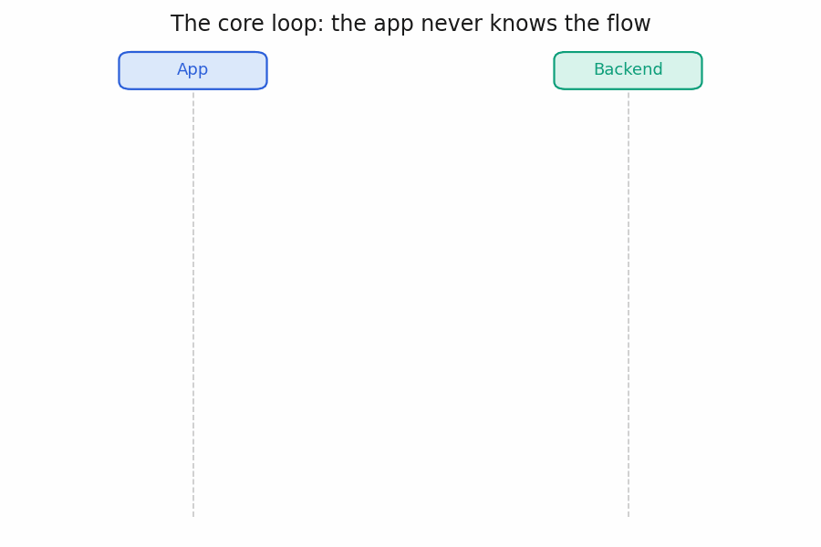

Building a Future-proof Registration Form
Registration forms are one of the most overlooked parts of a product. Nobody talks about how to engineer one properly yet it is the entry point of many apps and websites. This is how I would build one.
TL;DR
- Registration flows in regulated products change all the time, and the changes come from outside engineering: regulators add fields, legal updates the terms and conditions, product reorders pages to reduce drop-off.
- If the flow is hard-coded in the iOS app, the Android app, and the API, every one of those changes costs a backend deploy plus two app-store releases.
- The fix is to make the app a thin renderer of a few fixed step types (form, camera, signature, document viewer, PIN pad) and let the backend own the entire flow as versioned JSON: the page order, the fields, and the validation.
- After that, adding a field or reordering pages is a data edit, not a release. Go native only where the platform demands it (camera, PIN); build the form pages as web views so they’re written once for both platforms.
The most overlooked part of the product
If you’ve built onboarding for a regulated product like a trading or banking app, you know the flow: personal details, bank information, an ID photo, a selfie, terms and conditions, a PIN. Ten pages before the user can do anything.
Nobody writes about this part of the product. It’s “just forms,” so it gets underestimated by roadmaps, estimates, and the engineers assigned to it. In a regulated company it’s a complex system: versioned legal documents, per-call vendor costs, fraud attempts, compliance deadlines, and users dropping off on every page.
The naive approach
The average engineer’s first approach is to build it natively and mirror it on the backend: one hard-coded screen per page in iOS and Android, and one endpoint per page in the API. POST /register/personal-details, POST /register/bank-info, each with its own handler, its own validation, its own database columns. This creates three problems:
- Every field is built three times. Once in Swift, once in Kotlin, and once in the backend. Changing a single field means changing all three, going through two app-store reviews, and waiting for users to update their apps. And because there are three copies, they go out of sync: Android accepts a value that the API rejects.
- Reordering pages is a two-week project. It sounds like dragging items in a list, but the page order is hard-coded in three places: the iOS navigation, the Android navigation, and the API, where each endpoint assumes certain pages were already submitted before it. Moving one page means updating and re-testing all three, then shipping two app releases.
- Logic that spans pages breaks easily. For example, page 3 should only show an SSN field if the user picked “United States” on page 2. That rule has to be written in the iOS app, again in the Android app, and again on the server for validation. Three hand-written copies of the same rule will eventually disagree, and you get bugs like a field that appears on Android but not on iOS.
The natural next step is to make it schema-based: describe the fields in a schema (a JSON file that lists each field, its type, and its validation rules) instead of hard-coding the screens.
It helps, but most teams make a mistake: the schema ships inside the apps, and the backend keeps its endpoint-per-page API. The page order and the cross-page logic still live in native code, so a schema change still needs an app release, and a reorder still needs a backend deploy plus two app releases. The screens became declarative, but the flow didn’t.
Meanwhile, the form keeps changing, and almost never for engineering reasons:
- Regulators add fields. A tax residency question, a FATCA declaration, a source-of-funds breakdown, all with deadlines you don’t control.
- Legal updates the terms and conditions. Every new sign-up must see and accept the current version.
- Product reorders pages to reduce drop-off, or inserts a step for a third-party KYC vendor (the company that verifies IDs and selfies).
- Things break mid-flow. The KYC vendor gets backed up, or a partner bank’s API goes down. Ops needs to show users a message like “verification is taking longer than usual” right now. If that requires an engineer and an app release, the message arrives after the outage is over.
This is the core problem: the form changes often, the changes come from outside engineering, and with the naive architecture every change costs a backend deploy and two app releases.
A well designed registration form is the one that absorbs regulatory changes, drop-off, vendor costs, and consent requirements without a fire drill. Here’s the design I’d build.
The core idea: the app never knows the flow
The fix is to take the schema out of the app entirely. The design rests on one inversion: the app never knows the flow.
The mobile app is a thin renderer. It knows how to render a small, fixed set of step types: a form, a camera screen, a signature pad, a document viewer, a PIN pad. Nothing else. It doesn’t know how many pages exist, what order they come in, or what fields are on them.
The backend owns everything else: the flow definition, the page order, the validation, and the state machine that tracks where each user is. The entire contract between app and server is one loop:
“Here is the user’s answer to step X.” → “Here is step Y. Render it.”
The app never decides what comes next. It asks the server “what’s next?”, and the server reads a versioned JSON flow definition from the database and returns the next step, fully resolved and ready to draw.

The API can be much simpler as well. Instead of one endpoint per page, there are three generic API calls: open a session, submit a step, fetch the current state. Reordering pages can’t break the API, because the API never mentions specific pages. Validation is written once, in the flow definition, and enforced by the server; the apps just render the rules they’re given.
Here’s a flow definition (middle pages left out to keep it short):
{
"flow": "retail_onboarding",
"version": 14,
"steps": [
{ "id": "personal_details", "type": "form",
"fields": [
{ "key": "full_name", "kind": "text", "required": true },
{ "key": "dob", "kind": "date", "rules": ["age>=18"] },
{ "key": "tax_id", "kind": "text", "since_version": 14 } // ← the new regulatory field
]},
// … contact, employment, trading experience, bank pages …
{ "id": "id_card", "type": "camera", "capture": "id_card" },
{ "id": "selfie", "type": "camera", "capture": "selfie" },
{ "id": "tnc", "type": "document", "doc": "tnc" },
{ "id": "sign", "type": "signature" },
{ "id": "setup_pin", "type": "pin" }
],
"on_complete": [
{ "adapter": "vendor_kyc" } // verification is not a page
]
}
Changes that used to be app releases become data edits:
- Add a regulatory field → publish a new flow version.
- Reorder pages → edit the
steps array.
- Insert a vendor step → add a step pointing at an adapter.
An app release is only needed for a brand-new native step type, which is built once and reused forever e.g. liveness SDK integration. Everything else is data: fields, pages, ordering, copy.
Should the screens be native, web, or both?
Server-driven UI raises an obvious question: why not skip native screens entirely and put the whole flow in a web page inside the app?
The deciding factor is that the form has to work on both iOS and Android. Every native screen has to be built twice and shipped through two app-store reviews. A web page is built once and reaches both platforms instantly, and you can change it without any app release. Web has real downsides - it needs extra security work and feels slightly less polished than native - but building once instead of twice is worth it.
If you only support one platform, fully native is a perfectly good choice. You’d build each screen only once anyway, and you’d avoid the web security work. The web approach only pays off when you have two platforms to support.
To support two platforms the best decision is to go hybrid and decide per step:
- Camera (selfie / ID): native. Camera control, on-device photo quality checks, and the KYC vendor’s liveness SDKs only work natively.
- Signature and PIN: native. If there’s a step to create a PIN or e-signature go native to completely eliminate the possibility of a vulnerability that comes with a web implementation.
- Form pages, T&C, banners: web view inside the app. These pages get built once for both platforms, and new field types and visual changes ship from the server with no app release.
The web pages need real security work, and it’s ongoing, not a one-time setup:
- A strict Content Security Policy (CSP). This is a browser rule that says “this page may only load code from our own servers.” It blocks injected or third-party scripts from running on registration pages, which handle sensitive data.
- XSS review on frontend changes. XSS (cross-site scripting) is an attack where someone gets their own JavaScript to run on your page, letting them steal whatever the user types. Any change to the web form code gets reviewed for it.
- A safe login handoff from native to web. The web page needs to prove which user session it belongs to. The native app passes it a short-lived token that only works for this one registration session, and the token is never saved in the browser’s storage, where other scripts could read it.
The overall benefit
The architecture is small: one session API, versioned flow JSON, a state machine, per-step submissions, five native renderers plus web form pages. What it changes is the day-to-day work:
- A regulatory field is a flow version publish. Users mid-flow get asked for just the new field; nobody’s progress is thrown away.
- A T&C update is a legal-docs publish. New sign-ups see it immediately.
- “Bank X is having issues” is one row in the announcements table, shown only on the bank-info page.
- You can measure whether a form change helped or hurt. Because each session is pinned to the flow version it started on, users on v14 and users on v15 exist side by side. Compare their completion rates and you know within a day whether the new version made drop-off better or worse - instead of finding out weeks later through support tickets.
Every decision in this article is the same move: put the knowledge on the server, resolve it when the page is served, keep the app dumb. Ordering, validation, conditional fields, T&C versions, progress bars, banners - all of it. Once you commit to that, “the form changed again” stops being a fire drill and becomes a Tuesday.
The checklist: what a good registration form needs
Few people talk about registration forms, so most teams don’t know what to demand from one until each gap becomes an incident. Grade any design against this list, including the one you have in production.
The flow is data
- The server owns ordering, validation, and the state machine. The app only renders a fixed set of step types.
- Flow definitions are versioned. Sessions are pinned to the version they started on, so a publish never breaks a user mid-flow.
- Adding a field, reordering pages, or inserting a step is a data change. No release, no deploy.
- The app declares its capabilities when it opens a session; the server never serves a step the app can’t render. Old app versions get an update prompt, not a crash.
Conditional logic lives in one place
- Field visibility and required-ness are rules in the flow definition, not hand-written screen code.
- Dependencies across pages are resolved by the server when it serves the page; the app never needs another page’s answers.
- Editing an earlier answer cascades: still-valid answers are kept, no-longer-relevant ones are dropped, newly required ones are asked for.
- Server-side validation is the only validation that counts. Client-side rules are for user experience and are always re-checked.
Drop-off is a first-class scenario
- Every page submit is saved server-side; progress never lives only on the device.
- Resuming never re-asks what’s still valid. It asks only for what’s missing.
- Submits carry idempotency keys (a unique ID per submit attempt), so a double-tap can’t trigger a vendor call twice or create a duplicate record.
Money and abuse are designed for
- Expensive verification e.g. anti-fraud scanning runs once per session, at the end, and can’t be triggered twice. Never triggered by an upload.
- Cheap checks run early: on-device photo checks at capture, basic file validation at upload.
- Upload abuse is contained structurally: one storage slot per document type, presigned upload URLs, per-session quotas, rate-limited session creation.
Consent and compliance leave evidence
- Legal documents have their own versioned publishing process, separate from flows and app releases.
- Consent records store the exact version, language, and content hash the user saw: evidence, not a boolean.
- Sensitive fields are encrypted at the application layer; credentials like a PIN never enter form storage.
Ops can act without engineering
- Banners and maintenance mode are server-side data, scoped globally or to a single page.
- Every state transition emits a structured event, so per-page conversion, validation-failure rates, and resume rates come free.
- Completion rate is tracked per flow version, so every publish doubles as an experiment and a broken change shows up in the numbers within a day.
This is how it should be done. It’ll make your life easier than handling on-call on a daily basis due to bugs or breaking changes. The registration form is the first thing every user touches and the last thing most teams design deliberately. It deserves better than “just forms.”